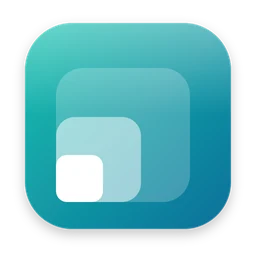
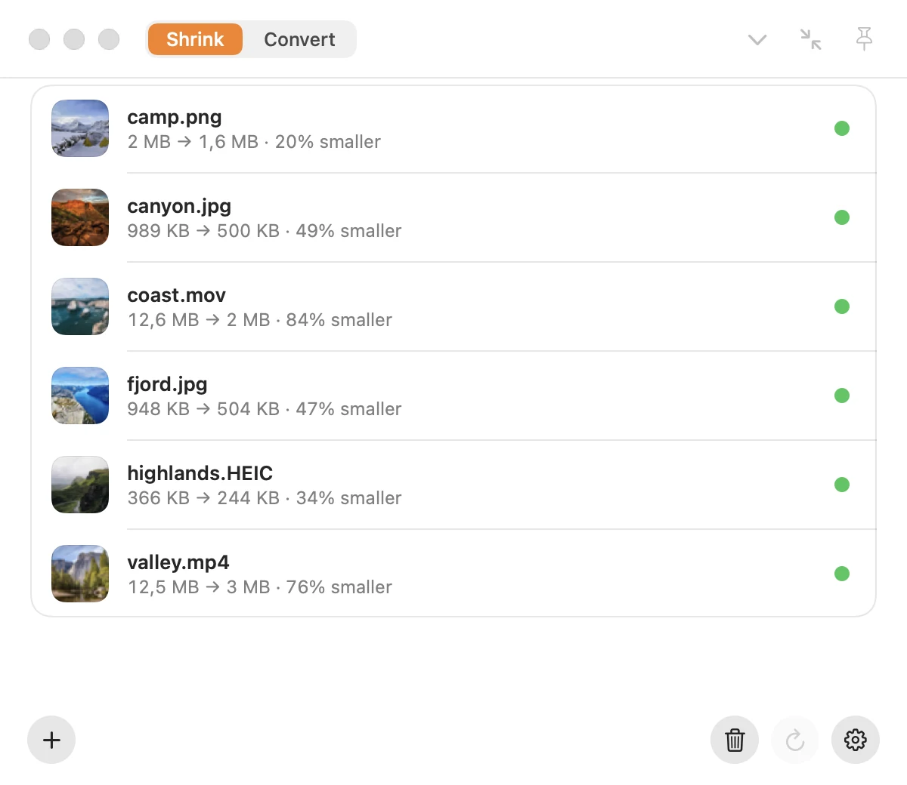
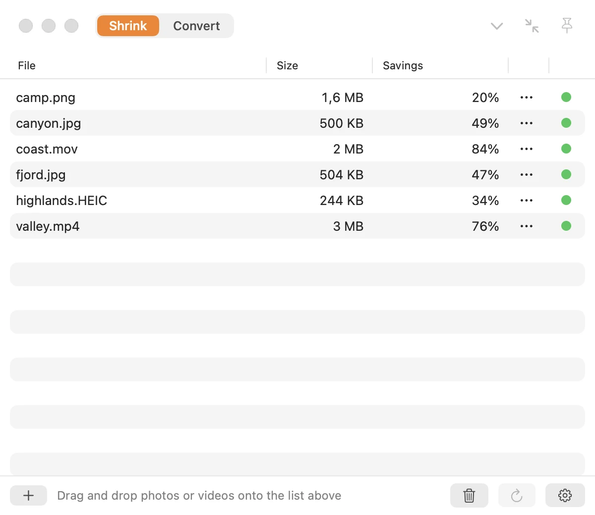
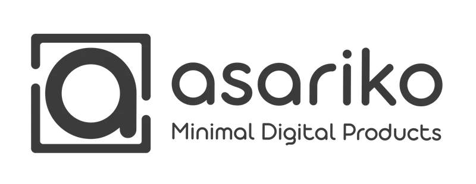
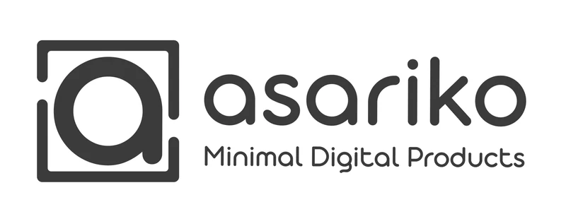
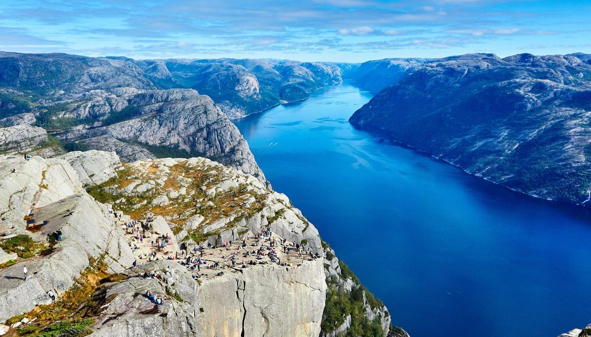

Pare Studio
Trims the file, not the photo.
Drop photos and videos in, get smaller copies next to the originals, with no visible loss in quality.

How it works
- 1Drop your filesDrag photos, videos or whole folders onto the window or the Dock icon, or click +.
- 2It shrinks right awayNo questions. Each file shows its old and new size, like 948 KB → 504 KB · 47% smaller.
- 3Your originals stayThe smaller copy is saved next to the original as name-small, so nothing is lost.
Portal mode
Shrink Pare to a small portal that stays on top of every window. Drag files into it from Finder, and the smaller copies appear right next to the originals. Double-click it to bring the full window back.
The quiet way to use Pare: it waits in the corner and never gets in the way.
Click a file, then drag it into the portal.
Two looks
Modern shows each file with a preview and its savings. Classic is a plain table with File, Size and Savings columns. Pick one in Settings.

What it does
Transparent backgrounds
Turn a logo's flat white background transparent, even inside the letters, with clean edges on any colour. For PNG and WebP output.


Shrink or Convert
Shrink keeps each file's format and makes it smaller. Convert changes the format first, like PNG to WebP or MOV to MP4. Photos: JPEG, PNG, HEIC, WebP. Videos: MOV, MP4, M4V.
Keeps what phone photos need
Photos stay the right way up and keep their HDR, their colours (Display P3) and the date they were taken. Videos keep HDR and their frame rate.
Location removed
GPS location is taken out by default. Orientation, colours and capture date stay.
Changed your mind?
Change a setting and run the same files again, or put the original back with one click. Whole folders work too, subfolders included.
Compare with the original
Not sure about the result? Open it side by side with the original, drag the line and zoom in to check the detail.

Left is the original, right is the file Pare made at its default setting. Both are a full-resolution crop, saved without any loss, so nothing hides a difference.
Sample photos from Unsplash by Alexey Topolyanskiy, Philippe Wuyts, Andrew Ridley, Wolfgang Lutz, Christian Joudrey and Joseph Barrientos. The videos were made from their photos.
Pare Studio and other tools
We ran the same phone photos and videos through Pare and two popular free optimizers, each with its default settings.
| Pare | Tool A | Tool B | |
|---|---|---|---|
| Photos stay the right way up | Yes | No | Yes |
| Keeps HDR in photos | Yes | No | No |
| Keeps the capture date | Yes | No | Yes |
| Keeps colours (Display P3) | Yes | No | Yes |
| HEIC photos | Yes | No | No |
| Videos | Yes | No | Yes |
| Keeps HDR in videos | Yes | No videos | No |
At Normal, Tool B makes JPEGs and videos smaller than Pare, but it drops HDR to do it. At Smallest, Pare is smaller on the video and still keeps HDR, and its photos keep HDR and the capture date. Tool A and Tool B are shown at their default settings. Measured in September and October 2026 on an Apple silicon Mac, with photos from a Samsung Galaxy S24 and a video from an iPhone 15. Newer versions of these tools may differ.
On your Mac, nothing uploaded
Pare Studio works entirely on your Mac. Your photos and videos are never sent anywhere, and there is no account to make.
- A Mac with Apple silicon (M1 or later)
- macOS 15 or later
- Free, on the Mac App Store
Give Pare Studio a go
Free for macOS.